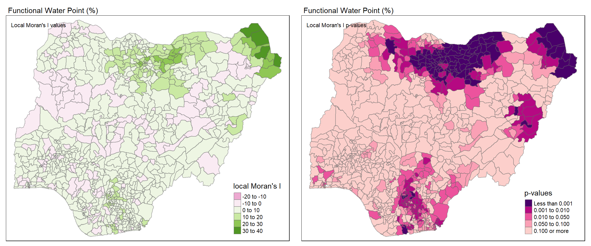
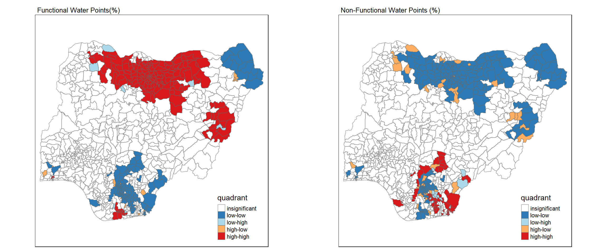

pacman::p_load(sf, tidyverse, tmap, spdep)Take-home Exercise 1
Overview
Setting the Scene

Back in March 2021, UNICEF reported that 1 in 5 children worldwide do not have enough water.
Globally, more than 1.42 billion people, including 450 million children, live in areas of high, or extremely high, water vulnerability, according to a new analysis released by UNICEF. T
Water is an important resource to mankind. Clean and accessible water is critical to human health. It provides a healthy environment, a sustainable economy, reduces poverty and ensures peace and security. Yet over 40% of the global population does not have access to sufficient clean water. By 2025, 1.8 billion people will be living in countries or regions with absolute water scarcity, according to UN-Water. The lack of water poses a major threat to several sectors, including food security. Agriculture uses about 70% of the world's accessible freshwater.
Developing countries are most affected by water shortages and poor water quality. Up to 80% of illnesses in the developing world are linked to inadequate water and sanitation. Despite technological advancement, providing clean water to the rural community is still a major development issues in many countries globally, especially countries in the Africa continent.
The mission of the Water Point Data Exchange (WPdx) is to unlock the potential of water point data to improve rural water services through evidence-based decision-making.
The WPdx Data Standard was collaboratively designed for data collection from rural areas at the water point or small water scheme level. The core parameters included in the WPdx Data Standard are parameters which are commonly measured by governments, non-governmental organizations, and researchers to enable easy sharing without changing the types of data typically collected. The WPdx Data Standard is managed and updated on an as-needed basis by a Global Working Group. Please check out the entire WPdx Data Standard.
The WPdx Data Repository is a cloud-based data library that enables sharing of global data that is compliant with the WPdx Data Standard. Data is fully open and free to access. Data is machine readable via an API. The repository includes an online data playground for analysis and visualization. To visit the WPdx Global Data Repository, please see here. An enhanced subset of the data, WPdx+ is also available. Please click here to learn more about two datasets.
Class Objectives
In culmination of the first four chapters of “R for Geospatial Data Science and Analytics” and first two lessons of ISSS624, this is my submission for Take-home Exercise 1. The following objectives were accomplished in this Take-home Exercise:
Using appropriate sf method, import the shapefile into R and save it in a simple feature data frame format.
Using appropriate tidyr and dplyr methods, derive the proportion of functional and non-functional water point at LGA level.
Combining the geospatial and aspatial data frame into simple feature data frame.
Performing outliers/clusters analysis by using appropriate local measures of spatial association methods.
Performing hotspot areas analysis by using appropriate local measures of spatial association methods.
Thematic Mapping
- Plot maps to show the spatial distribution of functional and non-functional water point rate at LGA level by using appropriate thematic mapping technique provided by tmap package.
Analytical Mapping
- Plot hotspot areas and outliers/clusters maps of functional and non0functional water point rate at LGA level by using appropriate thematic mapping technique provided by tmap package.
Getting Started
Before we can start doing any sort of analyses, the first step is acquiring the data.
Acquiring the Data
There are two important geospatial datasets to access which will be expounded upon below.
Administrative Boundaries of Nigeria
First we have the Level-2 Administrative Boundary (A.K.A. Local Government Area) of Nigeria, as sourced from geoBoundaries. The screenshot attached shows where to acquire the dataset.
The downloaded ZIP file will contain GIS data for the regular and simplified boundaries. For the purpose of this study, we will not use the simplified data. All related files were renamed to “geoBoundaries” for simplicity’s sake.
Water Point Data
To be able to analyze the water points of different areas, we’ll need the data from Water Point Data Exchange (WPdx) as mentioned previously. There are two versions, WPdx-Basic and WPdx+. For this take-home exercise, we are making use of WPdx+.
The site allows us to export the data in different file formats. For this exercise, I downloaded the Shapefile for familiarity. To simplify the filename, all related files were renamed to “geo_export”.
Loading in the Required Packages
To get started on coding with R, we need to first load the necessary packages that will help us with the processes. In the code chunk below, p_load() of the pacman package is used to install and load the following R packages into R environment:
sf-tidyverse-tmap-spedep-
Importing the Geospatial Data
Importing the LGA boundary data of Nigeria
Using the st_read() function of the sf package, the code chunk below creates a simple features data table from the geoBoundaries shapefile.
nga_bounds <- st_read(dsn = "data", layer = "geoBoundaries", crs = 4326)Nigeria has 774 local government areas (LGAs). The terms “LGA”, “shape”, “polygon”,“region” and “features” will be used interchangeable from this point forward in the take-home exercise.
Importing the water point data of Nigeria
Similarly above, we once again use st_read() to import the geo_export shapefile. However, this time we need to use the filter() function to make sure that we only extract the data related to Nigeria. The code snippet filter(clean_coun == "Nigeria") does just this, where ‘clean_coun’ is the column from the data table referring to the country name and == asks for the records set as “Nigeria”.
nga_wp <- st_read(dsn = "data", layer = "geo_export", crs = 4326) %>% filter(clean_coun == "Nigeria")
CODE REVIEW!
What does %>% do?
It’s an operator that is part of the dplyr package that passes the left-hand side of the operator as the first argument of the function on the right-hand side.
We end up with a data table containing 95,008 records and 73 variables. The geometry type is POINT, meaning each record is a point relative to the coordinate system. The records refer to different water points in Nigeria with different descriptions such as status, water source, usage capacity, etc.
Data Wrangling
Data is very raw and isn’t perfect. Sometimes some magic needs to be done to shape the data into something that is usable for the analytical process. In this section, we try to collate the individual water point data to usable attributes that describe the ratio of functional water points per LGA.
In the previous section we ended up with a data table that has 73 variables. That sounds like a lot because it is! Since the objective of this exercise is only related to the functionality of different water points, we are mostly interested in the different statuses of each water point.
Checking and replacing N/A values in ‘status_cle’
Since our primary focus is the status of each water point, we need to take a look at the variable ‘status_cle’. It would be very problematic if there were empty values. To check we use the code chunk below:
sum(is.na(nga_wp$status_cle))
This code chunk adds up all the cells in ‘status_cle’ that return TRUE from the is.na() function. The result tells us that there are 10,656 missing cells. That’s a lot! What do we do with them?
The code chunk below uses mutate() to replace the current ‘status_cle’ column with one where replace_na() is applied. The function replace_na replaces N/A values in a column with the second argument, in this case “Unknown”.
nga_wp <- nga_wp %>% mutate(status_cle = replace_na(status_cle, "Unknown"))By running the previous code chunk we can verify that there are no more N/A values.
sum(is.na(nga_wp$status_cle))
Regionalizing water point data
So we have the individual water points, but how do we translate it in such a way that we can compare it for each LGA?
Translating to Functional and Non-Functional
First, the code chunk below makes use of unique() to output the set of all unique values in the column.
unique(nga_wp$status_cle)The output shows that there are 7 different status values. However, some of them fall under the same status umbrella of either ‘Functional’ or ‘Non-Functional’, they just contain extra information.
wpt_functional <- nga_wp %>% filter(status_cle %in% c("Functional", "Functional but not in use", "Functional but needs repair"))The code chunk above extracts all the records that have the following statuses: “Functional”, “Functional but not in use”, and “Functional but needs repair” using the filter() function as saves to 'wpt_functional'.
wpt_nonfunctional <- nga_wp %>% filter(status_cle %in% c("Abandoned/Decommissioned", "Abandoned", "Non-Functional", "Non functional due to dry season", "Non-Functional due to dry season"))Similarly, the code chunk above extracts all the records that have the following statuses: “Abandoned/Decommissioned”, “Abandoned”, “Non-Functional”, “Non functional due to dry season”, and “Non-Functional due to dry season” and saves them to 'wpt_nonfunctional'.
wpt_unknown <- nga_wp %>% filter(status_cle == "Unknown")
Lastly, we do the same for all records with the status “Unknown” and save it to 'wpt_unknown'.
Performing point-in-polygon count
This is where the magic happens. Since we know the individual water points (as point data), we can see where they overlap with the polygons (LGAs) to determine regional data. The function st_intersects() returns true if two geometries intersect, meaning if the water point is found within the polygon boundary of an LGA, it will return true. The function lengths() gives the number of true values (or count) returned from st_intersects().
New columns are then added to our original boundary data 'nga_bounds' which dictate the count of total, functional, non-functional, and unknown water points per LGA.
nga_wp_final <- nga_bounds %>% mutate(`total_wpt` = lengths(st_intersects(nga_bounds, nga_wp))) %>% mutate(`wpt_functional` = lengths(st_intersects(nga_bounds, wpt_functional))) %>% mutate(`wpt_nonfunctional` = lengths(st_intersects(nga_bounds, wpt_nonfunctional))) %>% mutate(`wpt_unknown` = lengths(st_intersects(nga_bounds, wpt_unknown)))Getting the percentage of functional and non-functional water points
Not all regions are made equal. It wouldn’t make sense to compare the number of water points in a smaller region to a bigger region because it’s possible that larger land area would contribute to having more water points. To give a better analysis of the collective water point status per region, we can get the percentage or ratio of functional and non-functional water points.
The code chunk below adds two new columns to our dataframe, which contain the percentage of functional and non-functional water points.
nga_wp_final <- nga_wp_final %>% mutate(`pct_functional` = `wpt_functional`/`total_wpt`) %>% mutate(`pct_nonfunctional` = `wpt_nonfunctional`/`total_wpt`)Unfortunately, some of the regions either don’t have water points or their data is not recorded. Because of this, performing the division above to get the percentages may lead to NaN values when getting the percentages. A sample is shown for the LGA “Abadam”.

To fix this, we replace the NaN values with a value of 0 using the code chunk below. The function replace_na() which was used earlier for empty cells, also works for NaN values.
nga_wp_final <- nga_wp_final %>% mutate(pct_functional = replace_na(pct_functional, 0)) %>% mutate(pct_nonfunctional= replace_na(pct_nonfunctional, 0))
Projecting the CRS
Since the source of our boundary file was an international source, the CRS in use is geographic. What this means is the points are plotted on the earth’s surface, which is ellipsoid. We need transform the data to the appropriate projected CRS, which will be plotted on a flat surface.
st_crs(nga_wp_final)The code chunk below uses st_transform to transform 'nga_wp_final' to EPSG Code 26392, which is one of the projected coordinate reference systems used for Nigeria.
nga_wp_final <- st_transform(nga_wp_final, crs = 26392)Checking if the CRS changed, we have the results below.
st_crs(nga_wp_final)Saving the Analytical Data Table
Now that we’ve completed adjusting our data, we can save the new dataset as an RDS file. RDS files are data files native to R.
write_rds(nga_wp_final, "data/nga_wp_final.rds")We can now reload the dataset back to R using read_rds.
nga_wp_final <- read_rds("data/nga_wp_final.rds")Exploratory Data Analysis
ggplot(nga_wp_final, aes(pct_functional)) + geom_histogram(binwidth=0.1)summary(nga_wp_final$pct_functional) Min. 1st Qu. Median Mean 3rd Qu. Max.
0.0000 0.3261 0.4741 0.4984 0.6699 1.0000 ggplot(nga_wp_final, aes(pct_nonfunctional)) + geom_histogram(binwidth=0.1)tmap_mode ("plot")
fun <- tm_shape (nga_wp_final) +
tm_fill("pct_functional",
style = "jenks",
n=6,
title = "Functional (%)") +
tm_layout(main.title = "Distribution of Functional Water Points (%) by LGA",
main.title.position = "center",
main.title.size = 0.7,
main.title.fontface = "bold",
legend.height = 0.45,
legend.width = 0.35,
frame = TRUE) +
tm_borders(alpha = 0.5)
nfun <- tm_shape (nga_wp_final) +
tm_fill("pct_nonfunctional",
style = "jenks",
n=6,
title = "Non-Functional (%)") +
tm_layout(main.title = "Distribution of Non-Functional Water Points(%) by LGA",
main.title.position = "center",
main.title.size = 0.7,
main.title.fontface = "bold",
legend.height = 0.45,
legend.width = 0.35,
frame = TRUE) +
tm_borders(alpha = 0.5)
tmap_arrange (fun, nfun, ncol = 2, asp = 1)Geospatial Autocorrelation
Defining the Spatial Weights Matrix
Getting the centroids
Since we are using polygons, we need to define centroids, which are the points geometric centers of polygons. These are the values that will determine “distance” between the features. The code chunk below uses st_centroid() to create a POINT type spatial dataframe containing all the centroids of our LGAs or features as computed from the st_geometry() values.
coords <- st_centroid(st_geometry(nga_wp_final))
coordsGeometry set for 774 features
Geometry type: POINT
Dimension: XY
Bounding box: xmin: 39384.4 ymin: 41598.31 xmax: 1322777 ymax: 1073546
Projected CRS: Minna / Nigeria Mid Belt
First 5 geometries:Getting the adaptive distance weights matrix
knn <- knn2nb(knearneigh(coords, k=8))
knnNeighbour list object:
Number of regions: 774
Number of nonzero links: 6192
Percentage nonzero weights: 1.033592
Average number of links: 8
Non-symmetric neighbours listknn_lw <- nb2listw(knn, style = 'B')
summary(knn_lw)Characteristics of weights list object:
Neighbour list object:
Number of regions: 774
Number of nonzero links: 6192
Percentage nonzero weights: 1.033592
Average number of links: 8
Non-symmetric neighbours list
Link number distribution:
8
774
774 least connected regions:
1 2 3 4 5 6 7 8 9 10 11 12 13 14 15 16 17 18 19 20 21 22 23 24 25 26 27 28 29 30 31 32 33 34 35 36 37 38 39 40 41 42 43 44 45 46 47 48 49 50 51 52 53 54 55 56 57 58 59 60 61 62 63 64 65 66 67 68 69 70 71 72 73 74 75 76 77 78 79 80 81 82 83 84 85 86 87 88 89 90 91 92 93 94 95 96 97 98 99 100 101 102 103 104 105 106 107 108 109 110 111 112 113 114 115 116 117 118 119 120 121 122 123 124 125 126 127 128 129 130 131 132 133 134 135 136 137 138 139 140 141 142 143 144 145 146 147 148 149 150 151 152 153 154 155 156 157 158 159 160 161 162 163 164 165 166 167 168 169 170 171 172 173 174 175 176 177 178 179 180 181 182 183 184 185 186 187 188 189 190 191 192 193 194 195 196 197 198 199 200 201 202 203 204 205 206 207 208 209 210 211 212 213 214 215 216 217 218 219 220 221 222 223 224 225 226 227 228 229 230 231 232 233 234 235 236 237 238 239 240 241 242 243 244 245 246 247 248 249 250 251 252 253 254 255 256 257 258 259 260 261 262 263 264 265 266 267 268 269 270 271 272 273 274 275 276 277 278 279 280 281 282 283 284 285 286 287 288 289 290 291 292 293 294 295 296 297 298 299 300 301 302 303 304 305 306 307 308 309 310 311 312 313 314 315 316 317 318 319 320 321 322 323 324 325 326 327 328 329 330 331 332 333 334 335 336 337 338 339 340 341 342 343 344 345 346 347 348 349 350 351 352 353 354 355 356 357 358 359 360 361 362 363 364 365 366 367 368 369 370 371 372 373 374 375 376 377 378 379 380 381 382 383 384 385 386 387 388 389 390 391 392 393 394 395 396 397 398 399 400 401 402 403 404 405 406 407 408 409 410 411 412 413 414 415 416 417 418 419 420 421 422 423 424 425 426 427 428 429 430 431 432 433 434 435 436 437 438 439 440 441 442 443 444 445 446 447 448 449 450 451 452 453 454 455 456 457 458 459 460 461 462 463 464 465 466 467 468 469 470 471 472 473 474 475 476 477 478 479 480 481 482 483 484 485 486 487 488 489 490 491 492 493 494 495 496 497 498 499 500 501 502 503 504 505 506 507 508 509 510 511 512 513 514 515 516 517 518 519 520 521 522 523 524 525 526 527 528 529 530 531 532 533 534 535 536 537 538 539 540 541 542 543 544 545 546 547 548 549 550 551 552 553 554 555 556 557 558 559 560 561 562 563 564 565 566 567 568 569 570 571 572 573 574 575 576 577 578 579 580 581 582 583 584 585 586 587 588 589 590 591 592 593 594 595 596 597 598 599 600 601 602 603 604 605 606 607 608 609 610 611 612 613 614 615 616 617 618 619 620 621 622 623 624 625 626 627 628 629 630 631 632 633 634 635 636 637 638 639 640 641 642 643 644 645 646 647 648 649 650 651 652 653 654 655 656 657 658 659 660 661 662 663 664 665 666 667 668 669 670 671 672 673 674 675 676 677 678 679 680 681 682 683 684 685 686 687 688 689 690 691 692 693 694 695 696 697 698 699 700 701 702 703 704 705 706 707 708 709 710 711 712 713 714 715 716 717 718 719 720 721 722 723 724 725 726 727 728 729 730 731 732 733 734 735 736 737 738 739 740 741 742 743 744 745 746 747 748 749 750 751 752 753 754 755 756 757 758 759 760 761 762 763 764 765 766 767 768 769 770 771 772 773 774 with 8 links
774 most connected regions:
1 2 3 4 5 6 7 8 9 10 11 12 13 14 15 16 17 18 19 20 21 22 23 24 25 26 27 28 29 30 31 32 33 34 35 36 37 38 39 40 41 42 43 44 45 46 47 48 49 50 51 52 53 54 55 56 57 58 59 60 61 62 63 64 65 66 67 68 69 70 71 72 73 74 75 76 77 78 79 80 81 82 83 84 85 86 87 88 89 90 91 92 93 94 95 96 97 98 99 100 101 102 103 104 105 106 107 108 109 110 111 112 113 114 115 116 117 118 119 120 121 122 123 124 125 126 127 128 129 130 131 132 133 134 135 136 137 138 139 140 141 142 143 144 145 146 147 148 149 150 151 152 153 154 155 156 157 158 159 160 161 162 163 164 165 166 167 168 169 170 171 172 173 174 175 176 177 178 179 180 181 182 183 184 185 186 187 188 189 190 191 192 193 194 195 196 197 198 199 200 201 202 203 204 205 206 207 208 209 210 211 212 213 214 215 216 217 218 219 220 221 222 223 224 225 226 227 228 229 230 231 232 233 234 235 236 237 238 239 240 241 242 243 244 245 246 247 248 249 250 251 252 253 254 255 256 257 258 259 260 261 262 263 264 265 266 267 268 269 270 271 272 273 274 275 276 277 278 279 280 281 282 283 284 285 286 287 288 289 290 291 292 293 294 295 296 297 298 299 300 301 302 303 304 305 306 307 308 309 310 311 312 313 314 315 316 317 318 319 320 321 322 323 324 325 326 327 328 329 330 331 332 333 334 335 336 337 338 339 340 341 342 343 344 345 346 347 348 349 350 351 352 353 354 355 356 357 358 359 360 361 362 363 364 365 366 367 368 369 370 371 372 373 374 375 376 377 378 379 380 381 382 383 384 385 386 387 388 389 390 391 392 393 394 395 396 397 398 399 400 401 402 403 404 405 406 407 408 409 410 411 412 413 414 415 416 417 418 419 420 421 422 423 424 425 426 427 428 429 430 431 432 433 434 435 436 437 438 439 440 441 442 443 444 445 446 447 448 449 450 451 452 453 454 455 456 457 458 459 460 461 462 463 464 465 466 467 468 469 470 471 472 473 474 475 476 477 478 479 480 481 482 483 484 485 486 487 488 489 490 491 492 493 494 495 496 497 498 499 500 501 502 503 504 505 506 507 508 509 510 511 512 513 514 515 516 517 518 519 520 521 522 523 524 525 526 527 528 529 530 531 532 533 534 535 536 537 538 539 540 541 542 543 544 545 546 547 548 549 550 551 552 553 554 555 556 557 558 559 560 561 562 563 564 565 566 567 568 569 570 571 572 573 574 575 576 577 578 579 580 581 582 583 584 585 586 587 588 589 590 591 592 593 594 595 596 597 598 599 600 601 602 603 604 605 606 607 608 609 610 611 612 613 614 615 616 617 618 619 620 621 622 623 624 625 626 627 628 629 630 631 632 633 634 635 636 637 638 639 640 641 642 643 644 645 646 647 648 649 650 651 652 653 654 655 656 657 658 659 660 661 662 663 664 665 666 667 668 669 670 671 672 673 674 675 676 677 678 679 680 681 682 683 684 685 686 687 688 689 690 691 692 693 694 695 696 697 698 699 700 701 702 703 704 705 706 707 708 709 710 711 712 713 714 715 716 717 718 719 720 721 722 723 724 725 726 727 728 729 730 731 732 733 734 735 736 737 738 739 740 741 742 743 744 745 746 747 748 749 750 751 752 753 754 755 756 757 758 759 760 761 762 763 764 765 766 767 768 769 770 771 772 773 774 with 8 links
Weights style: B
Weights constants summary:
n nn S0 S1 S2
B 774 599076 6192 11152 201942Visualizing the spatial weights matrix
plot(nga_wp_final$geometry, border="lightgrey", main="Adaptive Distance (8)")
plot(knn, coords, add=TRUE, col="red", length=0.08)Global Spatial Autocorrelation
Computing Moran’s I statistic for 'pct_functional'
moran.test(nga_wp_final$pct_functional, listw=knn_lw, zero.policy = TRUE, na.action=na.omit)
Moran I test under randomisation
data: nga_wp_final$pct_functional
weights: knn_lw
Moran I statistic standard deviate = 31.161, p-value < 2.2e-16
alternative hypothesis: greater
sample estimates:
Moran I statistic Expectation Variance
0.5271813748 -0.0012936611 0.0002876224 Computing Moran’s I statistic for 'pct_nonfunctional'
moran.test(nga_wp_final$pct_nonfunctional, listw=knn_lw, zero.policy = TRUE, na.action=na.omit)
Moran I test under randomisation
data: nga_wp_final$pct_nonfunctional
weights: knn_lw
Moran I statistic standard deviate = 27.281, p-value < 2.2e-16
alternative hypothesis: greater
sample estimates:
Moran I statistic Expectation Variance
0.4613158941 -0.0012936611 0.0002875562 Plotting Moran I’s spatial correlogram for 'pct_functional'
MI_corr <- sp.correlogram(knn,
nga_wp_final$pct_functional,
order=5,
method="I",
style="W")
plot(MI_corr)Plotting Moran I’s spatial correlogram for 'pct_nonfunctional'
MI_corr <- sp.correlogram(knn,
nga_wp_final$pct_nonfunctional,
order=5,
method="I",
style="W")
plot(MI_corr)Cluster and Outlier Analysis
Computing local Moran’s I for 'pct_functional' and 'pct_nonfunctional'
localMI_fun <- localmoran(nga_wp_final$pct_functional, knn_lw)
localMI_nonfun <- localmoran(nga_wp_final$pct_nonfunctional, knn_lw)head(localMI_fun) Ii E.Ii Var.Ii Z.Ii Pr(z != E(Ii))
1 2.5100432 -0.001328196 1.01853344 2.4884177 1.283129e-02
2 2.5545352 -0.001431708 1.09789794 2.4393507 1.471368e-02
3 33.9550743 -0.043926357 33.50573077 5.8736303 4.263537e-09
4 -0.6153427 -0.001593282 1.22177539 -0.5552588 5.787177e-01
5 0.2676861 -0.000065655 0.05035578 1.1931846 2.327971e-01
6 3.2496101 -0.003795002 2.90931709 1.9074037 5.646833e-02head(localMI_nonfun) Ii E.Ii Var.Ii Z.Ii Pr(z != E(Ii))
1 5.407157 -0.006784813 5.199415 2.374304 1.758207e-02
2 4.964822 -0.004189178 3.211341 2.772853 5.556728e-03
3 23.376412 -0.030241154 23.106738 4.869339 1.119723e-06
4 1.735812 -0.013188412 10.098598 0.550376 5.820615e-01
5 7.139931 -0.006117971 4.688784 3.300166 9.662752e-04
6 4.593069 -0.007507087 5.752397 1.918173 5.508904e-02Mapping local Moran’s I values and p-values for 'pct_functional'
nga_wp_final.localMI_fun <- cbind(nga_wp_final,localMI_fun) %>% rename(Pr.Ii = Pr.z....E.Ii..)localMI.map <- tm_shape(nga_wp_final.localMI_fun) +
tm_fill(col = "Ii",
style = "pretty",
title = "local moran statistics") +
tm_borders(alpha = 0.5)
pvalue.map <- tm_shape(nga_wp_final.localMI_fun) +
tm_fill(col = "Pr.Ii",
breaks=c(-Inf, 0.001, 0.01, 0.05, 0.1, Inf),
palette="-Blues",
title = "local Moran's I p-values") +
tm_borders(alpha = 0.5)
tmap_arrange(localMI.map, pvalue.map, asp=1, ncol=2)
Mapping local Moran’s I values and p-values for 'pct_nonfunctional'
nga_wp_final.localMI_nonfun <- cbind(nga_wp_final,localMI_nonfun) %>% rename(Pr.Ii = Pr.z....E.Ii..)localMI.map <- tm_shape(nga_wp_final.localMI_nonfun) +
tm_fill(col = "Ii",
style = "pretty",
title = "local moran statistics") +
tm_borders(alpha = 0.5)
pvalue.map <- tm_shape(nga_wp_final.localMI_nonfun) +
tm_fill(col = "Pr.Ii",
breaks=c(-Inf, 0.001, 0.01, 0.05, 0.1, Inf),
palette="-Blues",
title = "local Moran's I p-values") +
tm_borders(alpha = 0.5)
tmap_arrange(localMI.map, pvalue.map, asp=1, ncol=2)
Mapping local Moran’s I values for 'pct_functional' and 'pct_nonfunctional' with p-value > 0.05
localMI_fun.map <- tm_shape(nga_wp_final.localMI_fun)+ tm_fill("white") + tm_borders("grey", lwd = 0.5, alpha = 0.5) + tm_shape(nga_wp_final.localMI_fun[nga_wp_final.localMI_fun$Pr.Ii < 0.05,]) + tm_fill(col = "Ii",
style = "pretty",
title = "local moran statistics") + tm_borders(alpha = 0.5)
localMI_nonfun.map <- tm_shape(nga_wp_final.localMI_nonfun)+ tm_fill("white") + tm_borders("grey", lwd = 0.5, alpha = 0.5) + tm_shape(nga_wp_final.localMI_nonfun[nga_wp_final.localMI_nonfun$Pr.Ii < 0.05,]) + tm_fill(col = "Ii",
style = "pretty",
title = "local moran statistics") + tm_borders(alpha = 0.5)
tmap_arrange(localMI_fun.map, localMI_nonfun.map, asp=1, ncol=2)
Creating a LISA cluster map for 'pct_functional'
Creating a Moran scatterplot for 'pct_functional'
nga_wp_final$Z.pct_functional <- scale(nga_wp_final$pct_functional) %>% as.vector
mscat_fun <- moran.plot(nga_wp_final$Z.pct_functional, knn_lw,labels=as.character(nga_wp_final$shapeName), xlab = "Functional Water Points (%)", ylab = "Spatially Lagged Functional Water Points (%)")
Creating a Moran scatterplot for 'pct_nonfunctional'
nga_wp_final$Z.pct_nonfunctional <- scale(nga_wp_final$pct_nonfunctional) %>% as.vector
mscat_nonfun <- moran.plot(nga_wp_final$Z.pct_nonfunctional, knn_lw,labels=as.character(nga_wp_final$shapeName), xlab = "Functional Water Points (%)", ylab = "Spatially Lagged Functional Water Points (%)")
Preparing LISA map classes for 'pct_functional' and 'pct_nonfunctional'
lag.listw() uses the first argument, the spatial weights matrix, to create a spatially lagged variable of the second argument.
quadrant <- vector(mode="numeric",length=nrow(localMI_fun))
signif <- 0.05
# Functional
nga_wp_final$lag_pct_functional <- lag.listw(knn_lw, nga_wp_final$pct_functional)
DV <- nga_wp_final$lag_pct_functional - mean(nga_wp_final$lag_pct_functional)
LM_I <- localMI_fun[,1]
quadrant[DV <0 & LM_I>0] <- 1
quadrant[DV >0 & LM_I<0] <- 2
quadrant[DV <0 & LM_I<0] <- 3
quadrant[DV >0 & LM_I>0] <- 4
quadrant[localMI_fun[,5]>signif] <- 0
nga_wp_final.localMI_fun$quadrant <- quadrant
# Non-Functional
nga_wp_final$lag_pct_nonfunctional <- lag.listw(knn_lw, nga_wp_final$pct_nonfunctional)
DV <- nga_wp_final$lag_pct_nonfunctional - mean(nga_wp_final$lag_pct_nonfunctional)
LM_I <- localMI_nonfun[,1]
quadrant[DV <0 & LM_I>0] <- 1
quadrant[DV >0 & LM_I<0] <- 2
quadrant[DV <0 & LM_I<0] <- 3
quadrant[DV >0 & LM_I>0] <- 4
quadrant[localMI_fun[,5]>signif] <- 0
nga_wp_final.localMI_nonfun$quadrant <- quadrantPlotting the LISA for 'pct_functional' and 'pct_nonfunctional'
colors <- c("#ffffff", "#2c7bb6", "#abd9e9", "#fdae61", "#d7191c")
clusters <- c("insignificant", "low-low", "low-high", "high-low", "high-high")
lisa_fun.map <- tm_shape(nga_wp_final.localMI_fun) +
tm_fill(col = "quadrant",
style = "cat",
palette = colors[c(sort(unique(quadrant)))+1],
labels = clusters[c(sort(unique(quadrant)))+1],
popup.vars = c("")) +
tm_view(set.zoom.limits = c(11,17)) +
tm_borders(alpha=0.5)
lisa_nonfun.map <- tm_shape(nga_wp_final.localMI_nonfun) +
tm_fill(col = "quadrant",
style = "cat",
palette = colors[c(sort(unique(quadrant)))+1],
labels = clusters[c(sort(unique(quadrant)))+1],
popup.vars = c("")) +
tm_view(set.zoom.limits = c(11,17)) +
tm_borders(alpha=0.5)
tmap_arrange(lisa_fun.map, lisa_nonfun.map, asp=1, ncol=2)
Hot and Cold Spots Analysis
Computing \(G_i\) statistics
gi.adaptive <- localG(nga_wp_final$pct_functional, knn_lw)
nga_wp_final.gi_fun <- cbind(nga_wp_final, as.matrix(gi.adaptive)) %>% rename(gstat_adaptive = as.matrix.gi.adaptive.)
gi.adaptive <- localG(nga_wp_final$pct_nonfunctional, knn_lw)
nga_wp_final.gi_nonfun <- cbind(nga_wp_final, as.matrix(gi.adaptive)) %>% rename(gstat_adaptive = as.matrix.gi.adaptive.)Mapping \(G_i\) statistics
pct_functional<- qtm(nga_wp_final, "pct_functional")
Gimap_fun <- tm_shape(nga_wp_final.gi_fun) +
tm_fill(col = "gstat_adaptive",
style = "pretty",
palette="-RdBu",
title = "local Gi") +
tm_borders(alpha = 0.5)
tmap_arrange(pct_functional,
Gimap_fun,
asp=1,
ncol=2)Mapping \(G_i\) statistics
pct_functional<- qtm(nga_wp_final, "pct_nonfunctional")
Gimap_fun <- tm_shape(nga_wp_final.gi_nonfun) +
tm_fill(col = "gstat_adaptive",
style = "pretty",
palette="-RdBu",
title = "local Gi") +
tm_borders(alpha = 0.5)
tmap_arrange(pct_functional,
Gimap_fun,
asp=1,
ncol=2)